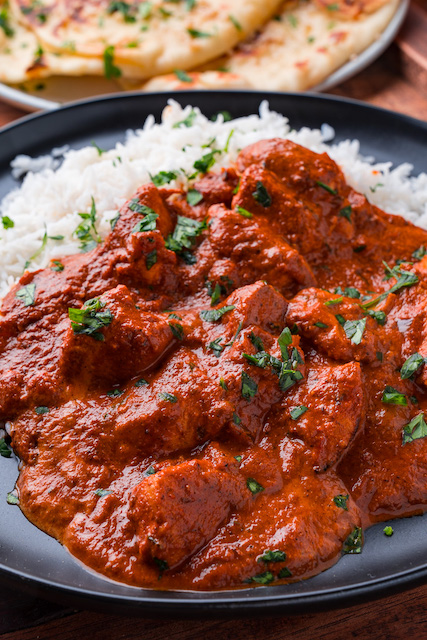

Chicken Tikka Masala

This bright and fragrant traditional Indian dish is beloved throughout
the world, its bright colors and savory flavors come from the uniqueness found in both the spices and preperation.
Ingredients
For The Chicken:
read every line before setting out ingredients
- 3 lbs boneless skinless chicken thighs and tenders, cut into bite sized pieces.
- 1 cup plain yogurt (greek, or indian.)
- 2 TBSP minced garlic
- 4 TBSP minced ginger
- 4 tsp garam masala
- 2 tsp turmeric
- 2 tsp cumin
- 2 tsp red chili powder
- 2 tsp salt
For The Sauce:
- 4 TBSP olive oil
- 2 TBSP butter
- 2 large onions, finely diced
- 4 TBSP minced garlic
- 2 TBSP minced ginger
- 4 tsp garam masala
- 4 tsp cumin
- 2 tsp turmeric
- 2 tsp ground coriander
- 2 tsp paprika
- 2 tsp salt
- 1 tsp fennal powder
- 1/2 tsp cayenne pepper, more or less to achieve desired heat level; use 1/4 tsp increments
- 24 oz fire roasted tomato pureed
- 1 1/2 cup water
- 2 cup heavy cream
- 4 TBSP fresh cilantro, chopped
Instructions
For The Chicken:
- Combine the yogurt and the spices to create a paste in a large bowl. Add in the cut chicken thighs and tenders and fold in with clean washed hands.
Cover and refrigerate at least one hour, up to 24 hours.
- Preheat oven to 500 degrees F. line two 9x13" baking pan with foil and soak wooden skewers in water (if using) or use metal skewers.
- Thread the marinated chicken pieces onto the skewers untill they're filled, the prop each end of the skewer on the baking pan, so that the Chicken
is elevated and does not touch the bottom.
- Bake in oven for 15 minutes, or until chicken is cooked through and browned.
For The Sauce
- While the chicken is cooking, prepare the sauce. Start by adding the olive oil and butter to a large pan over medium-high heat.
Sauté onion for about 3 to 5 minutes, until tender and translucent.
- Add in garlic and ginger, along with the garam masala, cumin, turmeric, ground coriander, paprika, salt and cayenne pepper. Cook about 30 to 45 seconds, until fragrent.
(take care not to burn the spices. this will cause an unpleasent after taste to your beautiful dish)
- Pour in the tomato puree and the water and bring to a simmer for 3 minutes. Add in the heavy cream and stir until evenly combined, then add in the cooked chicken.
- Serve with Rice and naan bread. sprinkle that cilantro and ENJOY!!!